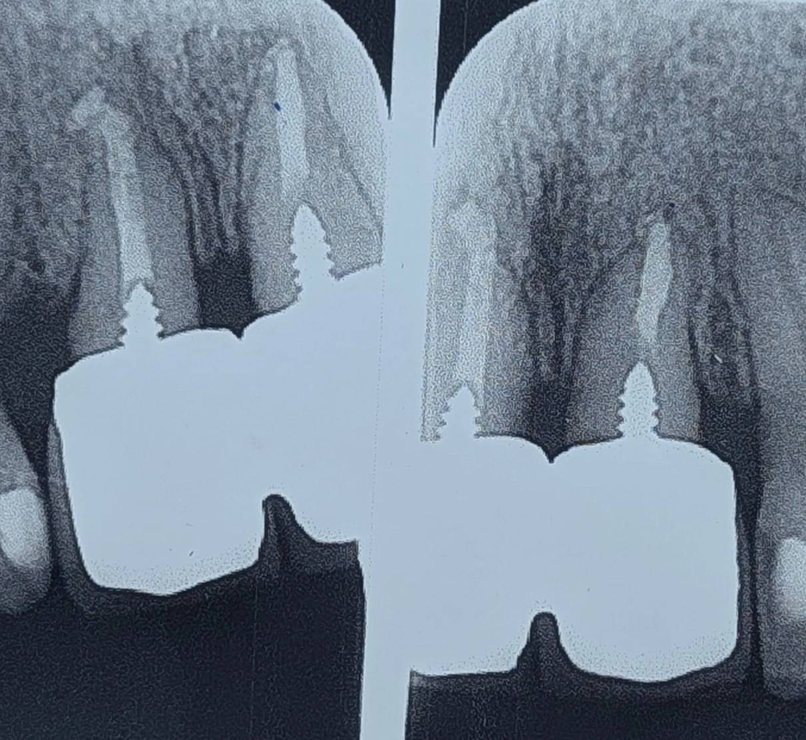

Chairside 16
وقتی حفظ دندان، به قیمت از دست رفتن استخوان تمام میشود

بیماری با دو سانترال قدامی مراجعه کرده بود؛ ریشههایی کوتاه، احتمالاً تحت تأثیر تحلیل ناشی از ارتودنسی، و سابقهی چندین بار تعویض روکش به دلیل نارضایتی بیمار. روکشهای قبلی به علت التهاب لثه خارج شده بودند. پس از خارج کردن روکشها، به علت باقی ماندن التهاب، برای حفظ دندانها جراحی افزایش طول تاج انجام شده بود. بیمار تعریف میکرد که قبل از درمان پرسیده: «آیا ایمپلنت گزینهی بهتری نیست؟» و پاسخ این بوده: «هیچی بهتر از دندان خود بیمار نیست و دندان باید حفظ شود.»
️امروز اما بیمار همچنان از وضعیت فعلی ناراضی است؛ دو روکش بلند، با نسبتهای غیرطبیعی و ظاهر غیرهماهنگ در حساسترین ناحیهی زیبایی.
گاهی در دندانپزشکی آنقدر روی "tooth preservation" تمرکز میکنیم که فراموش میکنیم در ناحیهی قدام، مخصوصاً در حضور ریشههای کوتاه، استخوان و معماری بافت نرم ارزشمندترین سرمایهی درمان هستند. حفظ دندان همیشه معادل موفقیت درمان نیست. گاهی ممکن است دندان حفظ شود، اما نتیجهی نهایی از نظر زیبایی، بیومکانیک و رضایت بیمار شکستخورده باشد.
️شاید در بعضی کیسها، سؤال اصلی این نباشد که: «آیا میتوان دندان را نگه داشت؟» بلکه این باشد که: «آیا حفظ این دندان، ارزش هزینهای را که از استخوان و معماری ناحیه گرفته میشود دارد؟» خیلیها میگویند: «هیچی مهمتر از دندان نیست.» اما شاید در بعضی کیسها، مخصوصاً در قدام، هیچچیز مهمتر از استخوان نباشد.
محتوای این صفحه برای استفادهٔ آموزشی دندانپزشکان و دانشجویان دندانپزشکی تهیه شده است.